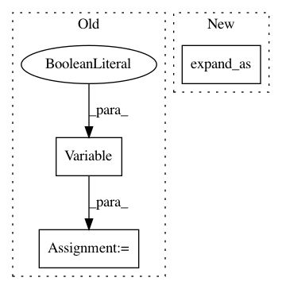

9ba91fa13cbb1e7bc4069e46469b34abb5ca4869,models/networks.py,GANLoss,get_target_tensor,#GANLoss#,130
Before Change
(self.fake_label_var.numel() != input.numel()))
if create_label:
fake_tensor = self.Tensor(input.size()).fill_(self.fake_label)
self.fake_label_var = Variable(fake_tensor, requires_grad=False)
target_tensor = self.fake_label_var
return target_tensor
def __call__(self, input, target_is_real):
After Change
target_tensor = self.real_label
else:
target_tensor = self.fake_label
return target_tensor.expand_as(input)
def __call__(self, input, target_is_real):
target_tensor = self.get_target_tensor(input, target_is_real)
return self.loss(input, target_tensor)
In pattern: SUPERPATTERN
Frequency: 3
Non-data size: 3
Instances
Project Name: junyanz/pytorch-CycleGAN-and-pix2pix
Commit Name: 9ba91fa13cbb1e7bc4069e46469b34abb5ca4869
Time: 2018-05-22
Author: tongzhou.wang.1994@gmail.com
File Name: models/networks.py
Class Name: GANLoss
Method Name: get_target_tensor
Project Name: stanfordnlp/stanza
Commit Name: 3c721df03c2c76f9ff474e7abb415017956ee176
Time: 2019-10-03
Author: zyh@stanford.edu
File Name: stanfordnlp/models/common/dropout.py
Class Name: LockedDropout
Method Name: forward